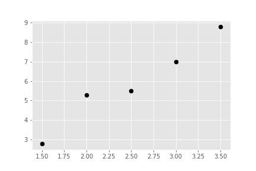
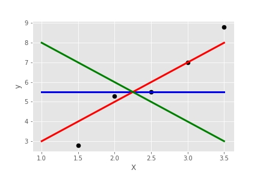
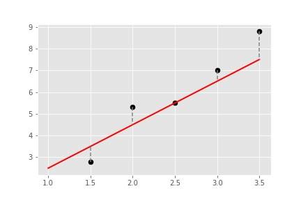

Be on touch for more models and projects


linear regression, a simple supervised learning model. In statistics, linear regression is a linear approach to modeling the relationship between a scalar response (or dependent variable) and one or more explanatory variables (or independent variables). The case of one explanatory variable is called simple linear regression. For more than one explanatory variable, the process is called multiple linear regression.
This term is distinct from multivariate linear regression, where multiple correlated dependent variables are predicted, rather than a single scalar variable.
workflow: import -> instantiate -> fit -> predict.
Linear regression models are popular because they can perform a fit quickly, and are easily interpreted. Predicting a continuous value with linear regression is a good starting point.
y = b + m*x (or) y=mx + c
where b is the intercept and m is the slope, x is a feature or an input, whereas y is label or an output. Our job is to find m and b such that the errors are minimized
To visualize the concept, let’s start with five points (1.5, 2.8), (2, 5.3), (2.5, 5.5), (3, 7), (3.5, 8.8):
We would like to fit a line through these data points, however even by eyeballing it, there doesn’t exist a line going through all five points, so we will do the best we could. What does this mean? Of the three lines shown below, which one do you think fits the data the best? The green line is y =10 + (-2)*X, the blue line is y = 5.5 + 0*X, and the red line is y = 1 + 2*X:
Red line! Why? Because it best captures the linear relationship between X and y, and it is closest to the points. Mathematically, the distance between the fitted line and data points are calculated by residuals, indicated by the dashed black vertical line in the plot below:
So linear regression essentially is finding the line where it minimizes the sum of the squared residuals. We will be discuss this topc with an example dataset from sklearn in the below options.